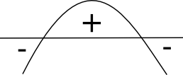
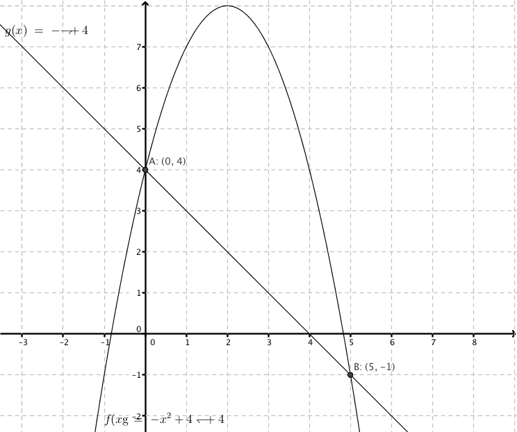

12. Olikheter av andra grad
Bestäm de \(x\) så att \(-x^2+4 >0\).
Lösning
Vi har \(-x^2+4 > 0\)
Vi löser ekvationen\(-x^2+4 =0\).
\(\begin{array}{rcll} -x^2 +4 &=&0 \\ -x^2 &= &-4 & \mid \cdot (-1)\\ x^2 &= &4 & \mid \sqrt{\quad}\\ x &= & \pm 2 \\ \end{array}\)
Vi ritar upp en skiss med nollställena

Parabeln öppnar sig neråt och är då positiv mellan nollställena. Lösningen är \(-2 <x <2\).
Exempel 1 Lös \(x^2-x-6 \leq 0\).
Lösning
Vi har \(x^2-x-6 \leq 0\).
Vi löser ekvationen:
\(\begin{array}{lrcll} &-x^2-x-6&= &0 & \textrm{} \\ &x &= &\dfrac{-(-1) \pm \sqrt{(-1)^2 -4 \cdot 1 (-6)}}{2\cdot 1} & = \dfrac{1\pm \sqrt{25}}{2} \textrm{} \\ \textrm{Rötterna blir:} &x=\dfrac{1+5}{2}= 3& \textrm{ eller } & x=\dfrac{1-5}{2}= -2& \textrm{} \\ \end{array}\)
Vi skissar en parabel med nollställerna

Parabeln öppnar sig uppåt och är negativ mellan nollställena.
Alltså \(-2 \leq x \leq 3\).
Exempel 2 För vilka värden på \(x\) gäller att värdemängden av \(f(x)=-x^2+4x+4\) är mindre än värdemängden av \(g(x)=-x+4\)?
Lösning
Sitatuonen ser ut som

\(\begin{array}{lrcll} \text{Vi undersöker när } & f(x) &< &g(x) & \textrm{} \\ \text{Vi får att} &-x^2+4x+4 &< &-x+4 & \textrm{} \\ \text{} &-x^2+5x &< &0 & \textrm{} \\ \text{Vi undersöker ekvationen} &-x^2 +5x&= &0 & \textrm{} \\ \textrm{} &-x(x-5) &= &0 & \textrm{} \\ \textrm{Nolleregeln ger:} &-x=0 & \text{ eller } &x-5=0 & \textrm{} \\ \textrm{} & & &x=5 & \textrm{} \\ \end{array}\)
Vi skissar upp en parabel med nollställena
Parabeln öppnar sig neråt och är då negativ utanför nollställena.
Svaret är: \(x<0\) eller \(x>5\).
När vi löser olikheter av andra eller större grad lönar det sig att göra som följande
- Bilda ett förhållande till noll.
- Lös ekvationen som ger nollställena.
- Skissa upp grafen, analysera och svara.
Uppgifter
- Bestäm de \(x\) så att \(x^2-4<0\).
\(x^2<4 \Leftrightarrow -2<x<2\)
- Lös \(9-x^2 < 0\).
Vi får att \(x^2>9\) som har lösningarna \(x<-3\) eller \(x>3\).
- Lös \(x^2-4x+3\leq 0\).
Vi löser ekvationen \(x^2-4x+3=0\) som har nollställena \(x=1\) och \(x=3\).
Teckenschema eller skissa av parabeln ger att \(1\leq x \leq 3\).
- Bestäm de \(x\) så att \(x^2+3x <0\).
Vi löser ekvationen \(x^2+3x=0\) som har rötterna \(x=0\) och \(x=-3\).
Teckenschema eller skiss av parabeln ger att \(-3<x<0\).
- Lös \(2x^2-3x>0\).
Då vi löser ekvationen \(2x^2-3x =0\) får vi att \(x=0\) eller \(x=\dfrac{3}{2}\).
Teckenschema eller skiss av parabeln ger oss att \(x<0\) eller \(x>\dfrac{3}{2}\).
- *Lös \(-\dfrac{1}{2}x^2+4 > 0\).
Vi får att
\(\begin{array}{rcl} -\dfrac{1}{2}x^2 &>& -4 \\ x^2 &<& 8 \\ \end{array}\)
Alltså \(-2\sqrt{2} < x < 2\sqrt{2}\).
- Lös \(x^2 > x\).
Vi får förhållandet \(x^2-x>0\) och ekvationen \(x^2-x=0\) som har lösningarna \(x=0\) och \(x=1\).
Teckenschema eller skiss av parabeln ger att \(x<0\) eller \(x>1\).
- För vilka värden på \(x\) gäller att \(2x^2+3 < 0\)?
Vi löser ekvationen \(2x^2+3=0\) som sakar rötter.
Vi har en parabel som öppnar sig uppåt och som inte skär \(x\)-axeln. Alltså sakar olikheten rötter.
- För vilka värden på \(x\) gäller att funktionsvärdena för \(f(x)=-2x^2 +6\) är positiva?
Vad betyder att funktionsvärdena är positiva? Hurdan olikhet löser du?
Vi har olikheten \(-2x^2-6 >0\) som har nollställena \(x=-\sqrt{3}\) och \(x=\sqrt{3}\).
Skiss av funktionen ger oss att \)-\sqrt{3} \leq x \leq \sqrt{3}\).
- *Låt \(f(x)=x^2-2x\) och \(g(x)=-x+2\). För vilka värden på \(x\) har funktionen \(g\) ett större värde än funktionen \(f\)?
Bilda modigt en olikhet.
Vi löser olikheten \(g(x)>f(x)\), alltså \(-x+2>x^2-2x\) som ger olikheten \(-x^2+x+2>0\) och ekvationen \(-x^2+x+2=0\). Ekvationen har rötterna \(x=-1\) och \(x=2\). Då vi analyserar \(-x^2+x+2>0\) får vi att \(-1<x<2\).
- För vilka värde på \(x\) gäller att \((x-3)^2 > (x-1)(x+1)\)?
Börja med att förenkla, lös sedan olikheten.
Vi får att \(x^2-6x+9 >x^2-1\) som har lösningen \(x<\dfrac{10}{6}\).
- *Bestäm konstanten \(a\) så att värdet av \(f(x)=x^2+a\) är större än värdet av \(g(x)=-x^2+4x\).
Vi är intressreade av att veta när \(f(x)>g(x)\). Bilda olikheten och lös på och studera sedan roten i rotformeln.
Vi är intresserade av \(x^2+a>-x^2+4x\). Det ger oss olikheten \(2x^2-4x+a>0\).
Om denna olikhet skall vara positiv gäller det att ekvationen \(2x^2-4x+a=0\) skall ha endast en rot eller sakna rötter. Det händer då diskriminanten, \(D=b^2-4ac\leq0\). Alltså \((-4)^2-4\cdot 2\cdot a \leq 0\) som har lösningen \(a\leq 2\).